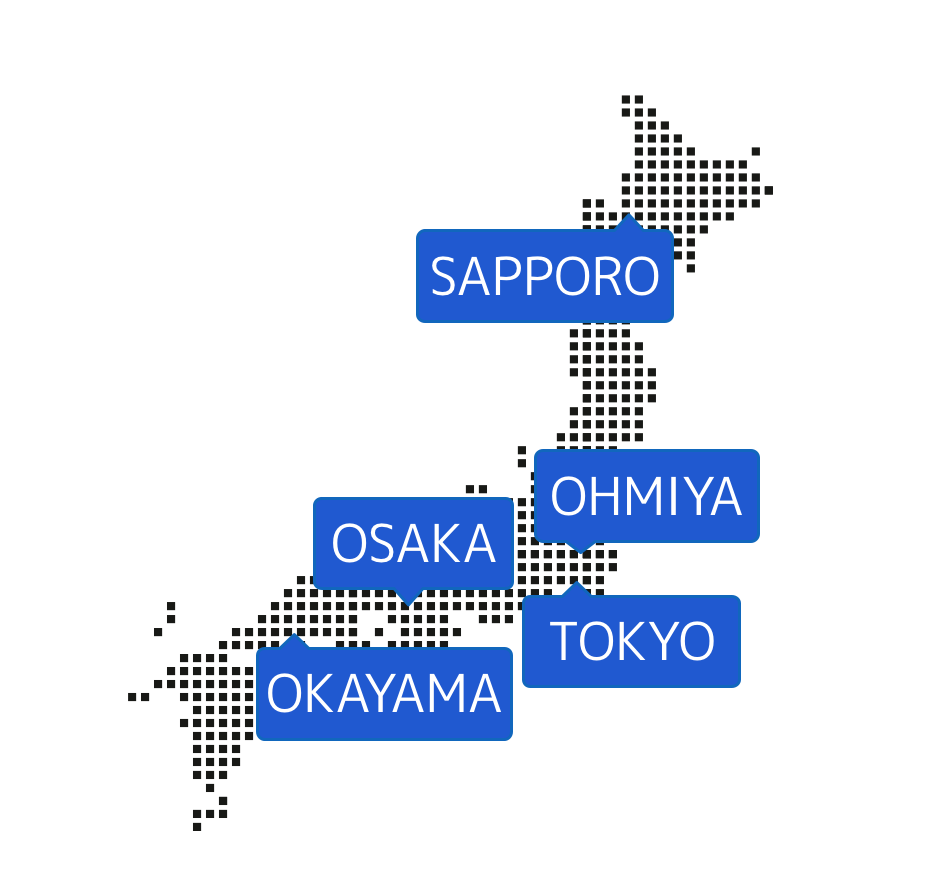

# Monaca UGとは？
- Monacaを利用する方々が楽しく、役立つ情報をシェアできるコミュニティ
- Monacaをすでに使っている方、興味のある方、Monacaを好きな方ならどなたでも！
- みんなで「体験談、成功例、工夫していること」を共有することで、MonacaユーザーがもっとMonacaを使いやすく、Monacaを好きになれる場所を目指しています。
# 公式の情報は意外と難しい
- みんなが知りたいのは現実的、かつ今日使える情報
- 公式情報 >>>> 超えられる壁 >>>> 実案件
- 情報をみんなで共有し、みんなで広めていく
# アジェンダ
| 時間 | 内容
|-----|------
|19:20| このコミュニティについて
|19:30| 開始 & 参加者自己紹介タイム
|19:40| hoops link tokyoアプリの話 by 郷田さん
|20:00| 休憩
|20:05| Monacaハンズオンの話 by リーデックス 小川さん
|20:25| JavaScriptを高速化するWebAssemblyの話 by MOONGIFT 中津川さん
|21:00| 懇親会
## とりあえず ~~🍺~~ ツイート
> #Monaca_UG TOKYO #6 に参加中！
これまでの活動
| EVENT |
16 |
| SPEAKER |
50+ |
| ATTENDEE |
288 |
| FACEBOOK |
176 |

# 公式サイト
https://monacaug.mobi
# 公式（？）ショップ
https://suzuri.jp/MonacaUG
# 運営募集中！
一緒にMonaca UG を盛り上げてくれる方！🙏
- Monaca ♥️ な人
- コミュニティ好きな人
- Webテクノロジー好きな人
# こんなことできます
- 参加者と楽しくコミュニケーションできます
- 他のMonaca UG管理者とのコミュニケーション
- 自分の聞きたい話をテーマに設定できます
- Monacaの案件を増やせます
- Monaca愛に溢れます
## こちらでぜひチェック！
https://monacaug.mobi
自己紹介
- お名前と所属
- 普段Monacaをどう使ってますか？